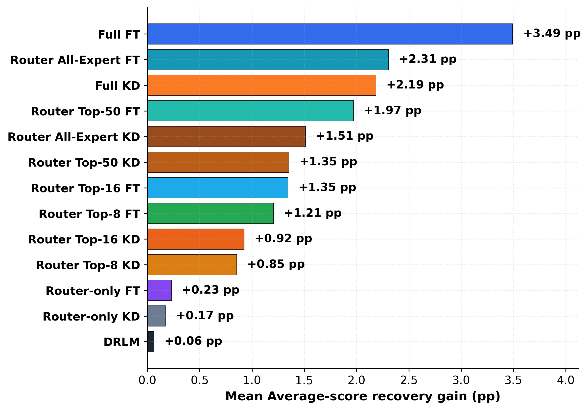
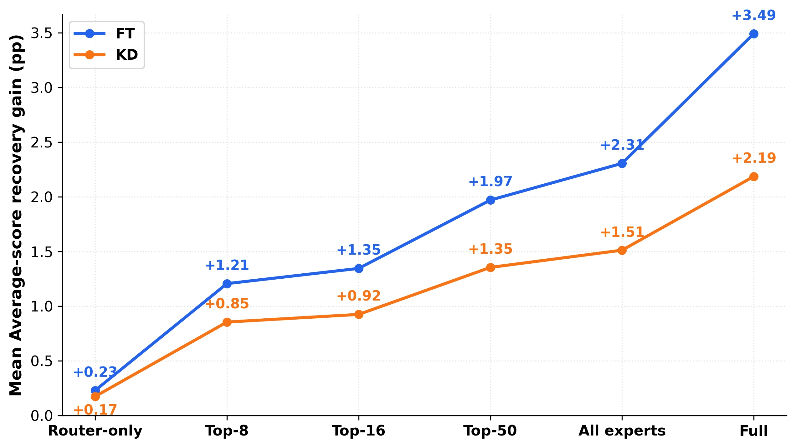
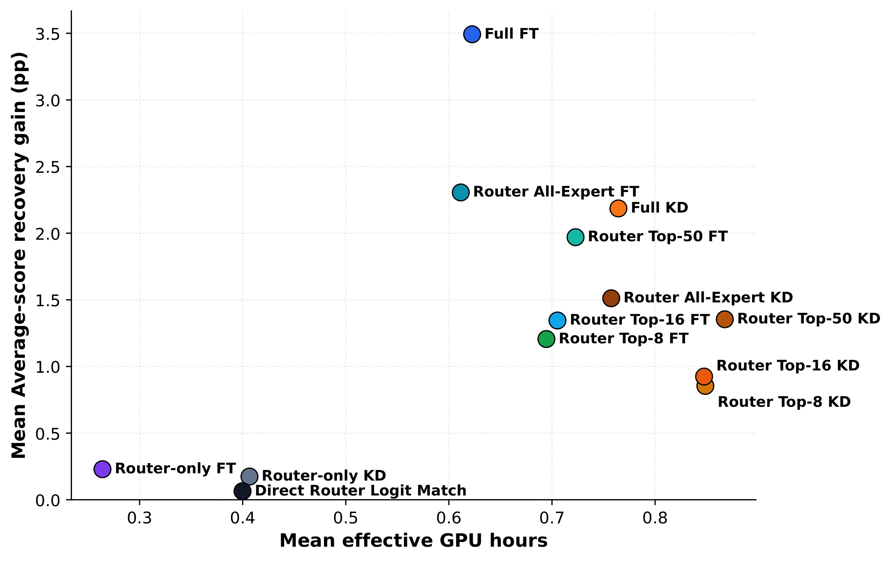
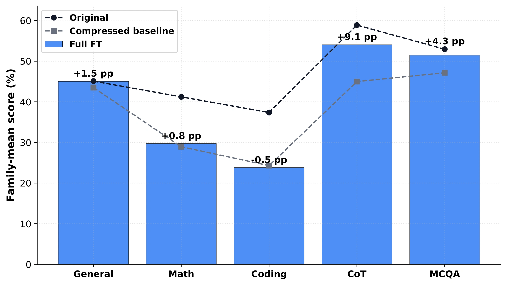
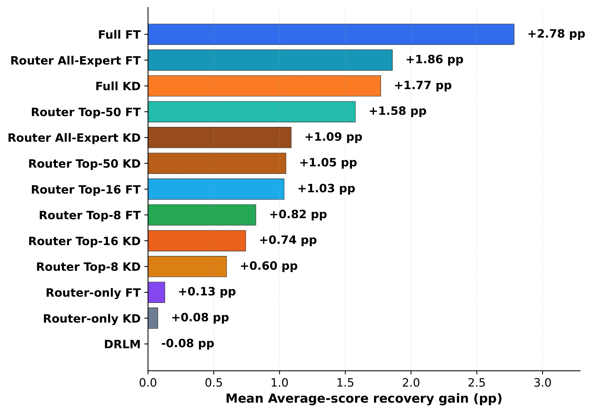
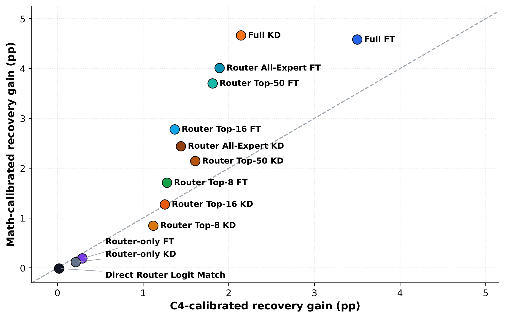

Overall strategy recovery
{kind=link}

Retraining-free MoE compression reduces deployment memory by pruning or merging experts, but often treats the compressed checkpoint as the final artifact. We argue that this view is incomplete: compressed MoE checkpoints are better understood as compressed initializations that benefit from a small post-compression adjustment stage.
We study this stage under a small general-domain data budget, comparing causal language modeling fine-tuning and teacher-based knowledge distillation across different trainable parameter scopes. By considering performance recovery alongside measured GPU costs, we examine how the adjustment objective and scope affect the compressed model. The study motivates a practical two-stage view: retraining-free compression followed by a short recovery stage, with both stages considered when designing the final pipeline.
Expert pruning and merging change the available expert paths and, for merging, the functions implemented by the experts. The resulting mismatch can involve both router reweighting and expert/path errors. These perturbations can also propagate through subsequent attention, normalization, and shared components.
PCA applies short gradient updates to an already-compressed checkpoint using a small amount of general-domain text. Our study compares adjustment choices on the same compressed checkpoints under matched data budgets and measured GPU costs.
Causal LM fine-tuning learns from observed next tokens. Token-level knowledge distillation matches the output distribution of the original, uncompressed teacher.
We compare router-only updates, router + selected experts, router + all experts, and full-parameter updates that also allow shared model components to change.
How much of the compressed model should be allowed to change? We expand the trainable scope from router-only, to router + selected experts (top-8, top-16, or top-50 per layer), to router + all experts, and finally to all model parameters. Select a scope to see which components are updated and compare the mean recovery from causal LM fine-tuning and token-level KD.
Choose which parts of the compressed model can change during adjustment.
All retained experts frozen
Conceptual view. Expert icons do not represent an exact count or proportion. Top-k experts are selected per layer before adjustment.
Only router parameters are updated. Retained experts and shared model components remain frozen.


Broader updates yield greater aggregate recovery. Figure 1 compares the adjustment strategies, while Figure 4 traces the effect of expanding the trainable scope. Full FT achieves the largest mean gain of +3.49 percentage points, followed by router + all experts FT (+2.31) and Full KD (+2.19). Under this small-budget protocol, causal LM fine-tuning outperforms token-level KD at each matched scope.
Router-only adjustment can reweight available experts, but cannot directly change their functions. Expert updates provide more ways to correct compression-induced errors. The further gain from router + all experts FT to Full FT suggests that allowing shared parameters to change also matters, consistent with errors propagating beyond the MoE modules. These are aggregate results under the tested adjustment budget; individual settings can differ.
Full FT provides the largest aggregate recovery while using less measured GPU time, memory occupancy, and energy than Full KD. Restricting adjustment to selected experts also incurs a separate expert-selection pass, so fewer trainable parameters do not necessarily imply lower adjustment cost.

Effective GPU-hours are utilization-weighted time; GiB-hours measure time-integrated memory occupancy. Compression, model loading, and benchmark evaluation are excluded. Full FT leads in aggregate under the measured protocol; it is not the cheapest strategy or the strongest in every individual setting.
Recovery is not uniform across benchmark families. Full FT recovers most strongly on chain-of-thought reasoning and multiple-choice QA, followed by general reasoning and QA. Mathematics changes only modestly, and coding decreases slightly.

The result suggests that a short general-domain LM adjustment is especially useful for recovering general generation and reasoning behavior. Specialized domains may require task-specific data or longer adaptation.
The family-level results show that Full FT helps chain-of-thought reasoning and multiple-choice QA most, followed by general reasoning and QA. The paired responses below add a generation-level view: can the compressed model sustain a natural-language answer without collapsing into repeated tokens? They complement the aggregate scores with concrete examples from both expert pruning and expert merging.
Across both pruning and merging, Full FT reduces repetition and restores more fluent continuations.
Prompt: what are forces (gravity, magnetism) made of?
Imagine you are playing in a playground. You see a ball rolling down down down down down down down down down down down down down down down down down down down down down down down down down down down down down down down down down down down down down down down down …
Imagine you are playing in a playground with a big, heavy ball. If you throw that ball down, it does not just go away and disappear. It stays in the ground, and if you throw it up, it stays in the sky. It does not just float on its own; it stays there because it is “stuck” to the ground or the sky. That “stickiness” is what we call gravity. … When we talk about forces like gravity or magnetism, we are talking about the rules of the universe. These rules are made of the way things are connected.
Prompt: How do overlays in NFL look so real? Like paint? How are they so accurate?
Okay, let us talk about this like you are a kid who is just learning how to talk. So imagine you are watching a video of a football game, and you see this thing called an “overlay.” It looks like a flat layer of color that just sits on the ground, like paint. But here is the cool part: even though it looks like paint, it is not really paint at all. It is not like paint that you can touch or that you can walk on and it will fl fl fl fl fl fl fl fl fl fl fl fl fl fl fl …
Okay, imagine you are playing football and you are on the field. You are running, jumping, dodging, and suddenly you see these bright lines and colors that look like paint on the grass. They are not just lines; they are little signs that show where the ball is going and where the players are. … Instead, they use a digital overlay technology. The computer knows exactly where every player is, where the ball is, and where the field lines are, so it draws the graphics in real time and makes them look as if they belong to the field.
Highlighted fragments mark repetition in the compressed model’s response. Ellipses indicate omitted text.
We examine whether the aggregate strategy trend persists when the adjustment data change: a smaller C4 budget, and a shift from C4 to OpenR1-Math-220k. Both checks retain the one-epoch adjustment procedure and the same downstream evaluation suite.
3,000 → 1,024 C4 examples

C4 → OpenR1-Math · 1,024 examples each

The leading aggregate pattern persists under both checks. With 1,024 C4 examples, Full FT gives the largest mean recovery (+2.78 percentage points), followed by router + all experts FT (+1.86) and Full KD (+1.77). Across calibration domains, the strategy rankings remain strongly associated (Spearman ρ = 0.973; Kendall τb = 0.897), and Full FT has the largest recovery averaged across the two domains.
The domain comparison uses six matched settings. This supports an aggregate trend, not an invariant ranking for every checkpoint: setting-level Spearman correlations range from 0.071 to 0.962.
The main conclusions concern small-budget, general-domain adjustment of the tested pruning and merging checkpoints under a unified implementation. Larger models, different training data or schedules, and system-level optimizations may change the trade-off. Expert Editing is reported separately as supplementary compatibility-mode evidence. PCA is an efficiency and capability-recovery stage; the study does not claim improved safety or factual reliability.
@misc{hyeon2026beyond,
title={Beyond Retraining-Free MoE Compression: A Cost-Normalized Study of Post-Compression Adjustment},
author={Sieun Hyeon and Jaeyoung Do},
year={2026},
eprint={2609.06076},
archivePrefix={arXiv},
primaryClass={cs.LG},
url={https://arxiv.org/abs/2609.06076},
}{kind=link}
{kind=link}
{kind=link}
{kind=link}
{kind=link}